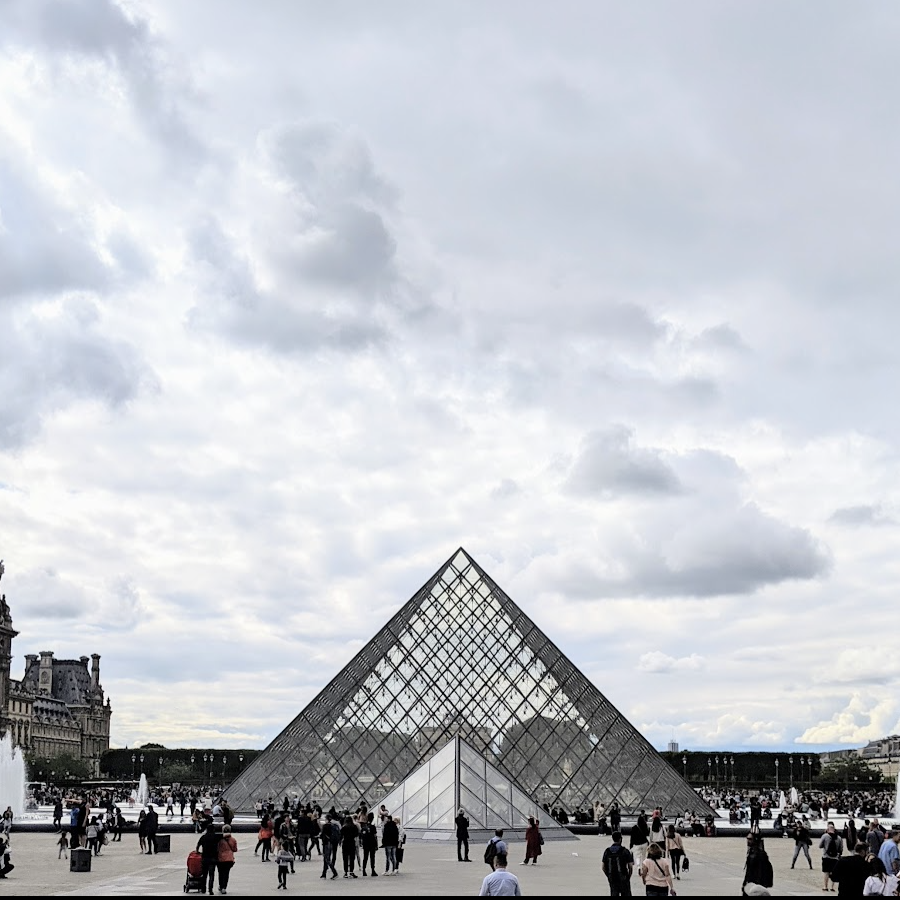
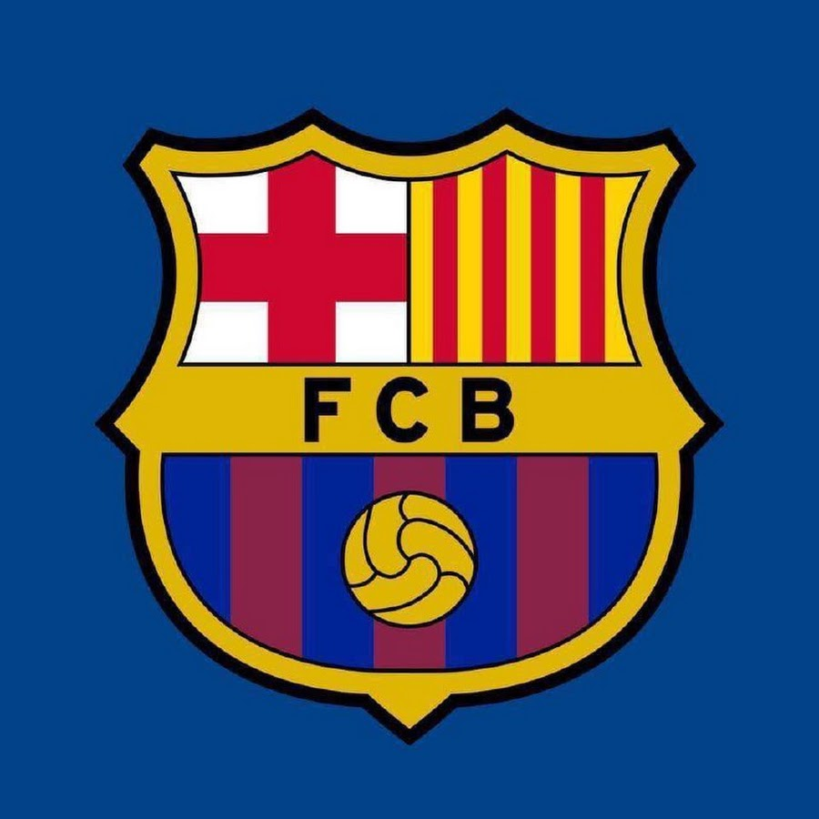
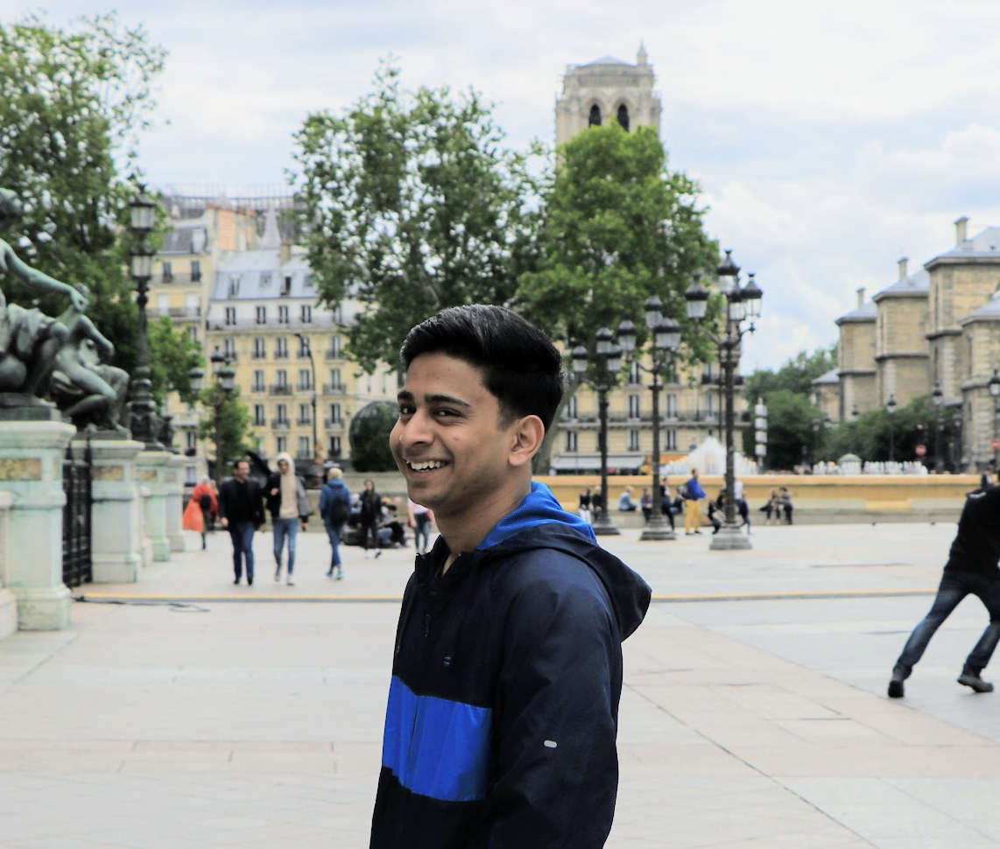

Hi!👋 I'm
Divyanshu Patel
Computer Science Student
ConnectAbout
-
Video Games
I spend a lot of my free time playing video games. Some of my favorite games I've played are Fifa, RDR2, and God of War
-

Travelling
I enjoy long trips! Some of my favorite places I've visited are Barcelona, Paris, New York City, and Nairobi
-

Soccer
Soccer is my favorite sport by far. I play pick up soccer on weekends, and my favorite soccer club is FC Barcelona.
Visca Barca!

Divyanshu Patel
Easley, SC
I am originally from India and I moved to United States in 2016